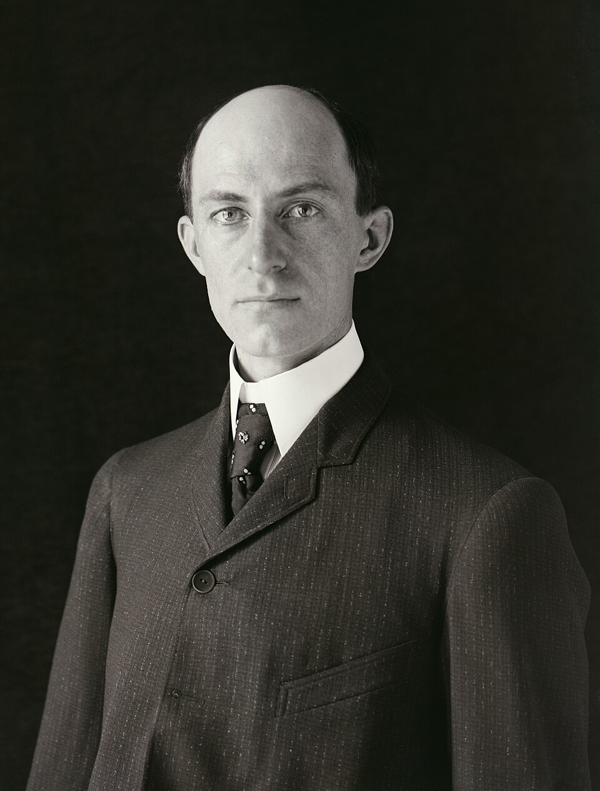

Dos hermanos fabricantes de bicicletas logran volar en una máquina más pesada que el aire
En los médanos de Kitty Hawk, el aparato de los señores Wilbur y Orville Wright se sostuvo en el aire por sus propios medios, con motor y piloto, cuatro veces en la mañana. El vuelo más largo duró 59 segundos. Casi nadie estaba allí para verlo.

El viejo sueño que costó la cera de Ícaro y el prestigio de tantos sabios se cumplió esta mañana fría y ventosa en un arenal perdido de la costa atlántica, ante cinco testigos. A las diez y treinta y cinco, el aeroplano de los hermanos Wright, un armazón de madera, tela y alambre con un motor de gasolina construido en su taller de bicicletas de Dayton, corrió sobre un riel de madera, se despegó del suelo con Orville tendido sobre el ala, y voló: doce segundos y treinta y seis metros que valen por todos los siglos anteriores.
Los hermanos se turnaron después en tres vuelos más, cada uno mejor que el anterior, hasta que Wilbur sostuvo la máquina en el aire cincuenta y nueve segundos y la llevó a doscientos sesenta metros de distancia. No fue un salto ni un planeo ni un golpe de suerte con el viento: el aparato partió por su propia fuerza, se gobernó en el aire y descendió sin romperse, que es toda la definición del vuelo. Un golpe de ráfaga volcó la máquina después del cuarto vuelo y cerró la jornada; los hermanos telegrafiaron a su padre: «Éxito. Cuatro vuelos. Informen a la prensa».
El triunfo de estos dos solterones metódicos es una lección que las academias tardarán en digerir. Mientras el profesor Langley, con cincuenta mil dólares del gobierno, estrellaba dos veces su gran aeródromo en el río Potomac —la última hace apenas nueve días, entre las carcajadas de la prensa—, los Wright gastaron menos de mil dólares de su tienda de bicicletas y atacaron el problema por donde nadie: no la fuerza, sino el equilibrio. Comprendieron, mirando planear a los pájaros, que volar es ante todo gobernar el aparato, y ensayaron durante tres años, con cometas, planeadores y hasta un túnel de viento casero, la torsión de las alas que permite inclinarse y enderezarse a voluntad. El motor fue lo último y lo de menos: doce caballos fabricados en el propio taller.
La escena de esta mañana fue de una pobreza conmovedora para tamaño acontecimiento: un viento helado que cortaba la cara, cinco testigos —cuatro salvavidas de la costa y un muchacho del pueblo— convocados con banderas de señales, y los hermanos turnándose por sorteo, de traje y gorra, porque estos hijos de obispo no vuelan ni trabajan en mangas de camisa. Uno de los salvavidas, instruido a las apuradas, apretó la pera de la cámara justo cuando el aparato se levantaba: si la placa salió, habrá retrato del instante exacto en que el hombre aprendió a volar. Una ráfaga volcó después la máquina y la averió sin remedio; los hermanos la embalaron sin drama. Saben algo que el mundo todavía no sabe: que ya no dependen de un aparato, sino de un conocimiento.
La prensa, digámoslo con rubor de oficio, apenas les creyó: los diarios de la mañana traen versiones confusas o directamente nada, y no falta el redactor que archiva el telegrama junto a los anuncios de máquinas de movimiento perpetuo. Hacen mal. Si dos mecánicos pacientes lograron hoy un minuto de vuelo, otros lograrán una hora, y luego un océano. El siglo que empieza acaba de recibir su juguete más serio, y este cronista no se atreve a imaginar todo lo que los hombres harán con el cielo ahora que les pertenece.